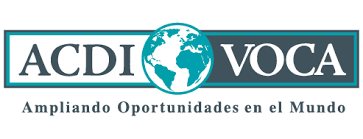
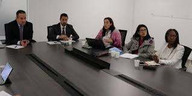

Una computadora gamer se difiere de una computadora común o una de trabajo por el hecho de que está enfocada a, como su nombre lo indica, tener un rendimiento óptimo en videojuegos.
Al ser los videojuegos en lo técnico un tipo de programa complejo que se mantiene activo desde que se ejecuta y se sostiene de muchísimos procesos simultáneos (el renderizado del escenario o mundo que se está viendo, las fórmulas matemáticas que se realizan cada segundo para determinar valores como el movimiento o el daño de un objeto, hasta las operaciones que permiten ejecutar comandos como mantener disparando al presionar un botón o decirle al juego que el jugador ha pasado de estar a pie a un vehículo), es obligatorio que la computadora que lo intente ejecutar sea capaz de procesar y responder a esa información instantáneamente.
HISTORIA
ACDI/VOCA es una ONG norteamericana que fomenta el crecimiento económico sostenible, promueve iniciativas que generan oportunidades y elevan la calidad de vida de las comunidades. Con sede en Washington, DC, ACDI/VOCA ha implementado programas en 146 países desde 1963. Sus principales áreas de trabajo están enfocadas en catalizar las inversiones, empoderar a las comunidades y fortalecer su capacidad de resiliencia, promover la agricultura climáticamente inteligente (CSA, siglas en inglés), contribuir al fortalecimiento institucional y a la creación de sistemas de mercado.
ACDI/VOCA llegó a Colombia hace 18 años, implementando programas financiados por USAID y el gobierno colombiano. En el 2002 implementó el Programa de Cafés Especiales (SCP), financiado por USAID. Este transmitió habilidades y conocimientos del mercado necesarios para mejorar la calidad y la comercialización del café a más de 7,300 familias productoras del grano.
Actualmente, a través del diseño e implementación de estrategias innovadoras de generación de valor social, transforma realidades de manera responsable de la mano de la empresa privada y el Estado. Creamos y operamos soluciones para generar oportunidades de inclusión socioeconómica y empoderamos como agentes de cambio a jóvenes, mujeres, comunidades étnicas y migrantes, mediante metodologías innovadoras.
PROGRAMA PARA AFRODESCENDIENTES E INDÍGENAS

Las poblaciones étnicas en Colombia se encuentran dentro de los grupos más marginados del país, sufriendo situaciones de violencia, desplazamiento, pobreza, exclusión, desigualdad y discriminación entre otros. Por esta razón USAID donó $61,4 millones de dólares para la creación e implementación del Programa para Afrodescendientes e Indígenas.
Este Programa implementado por ACDI/VOCA, es el primer programa diseñado con el único propósito de mejorar la calidad de vida de las poblaciones afrodescendientes e indígenas. Su enfoque estratégico se centra en el fomento y la construcción de la capacidad humana e institucional de las poblaciones étnicas y sus comunidades, al igual que de las instituciones del Estado y las organizaciones del sector privado. El Programa incluye un fondo de donaciones para ejecutar en tres regiones del país: Central, Caribe y Pacífico.
En 2016, ACDI/VOCA inició la implementación del Programa de Alianzas para la Reconciliación (PAR) de USAID, con una inversión de $ 60 millones. El objetivo del PAR es promover iniciativas de sensibilización y de movilización que aumentan las oportunidades económicas y sociales a través de alianzas transformadoras. El programa se implementó con cinco socios: la Universidad Javeriana, la Revista Semana, Centro Nacional de la Memoria Histórica, Corporación Reconciliación Colombia, Asociación Nacional de Industriales, y actualmente trabaja en 24 municipios de todo el país.
En septiembre de 2018, PAR formó una alianza con la Alcaldía de Bogotá para promover cambios en los comportamientos y acciones de movilización que promueven la convivencia, la reconciliación y el diálogo entre los grupos históricamente desfavorecidos (mujeres, personas LGTBI, afrodescendientes, indígenas, grupos religiosos, los inmigrantes venezolanos, y personas con discapacidad). La alianza utiliza herramientas y actividades innovadoras, así como las estrategias de generación de ingresos para promover Bogotá como la ciudad que tiene un lugar para todos.